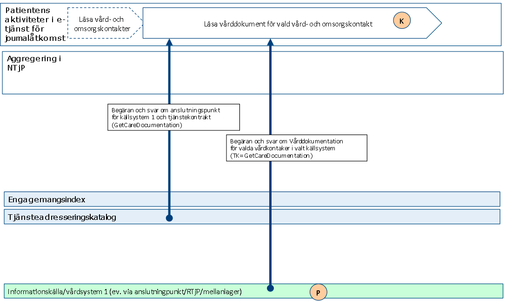
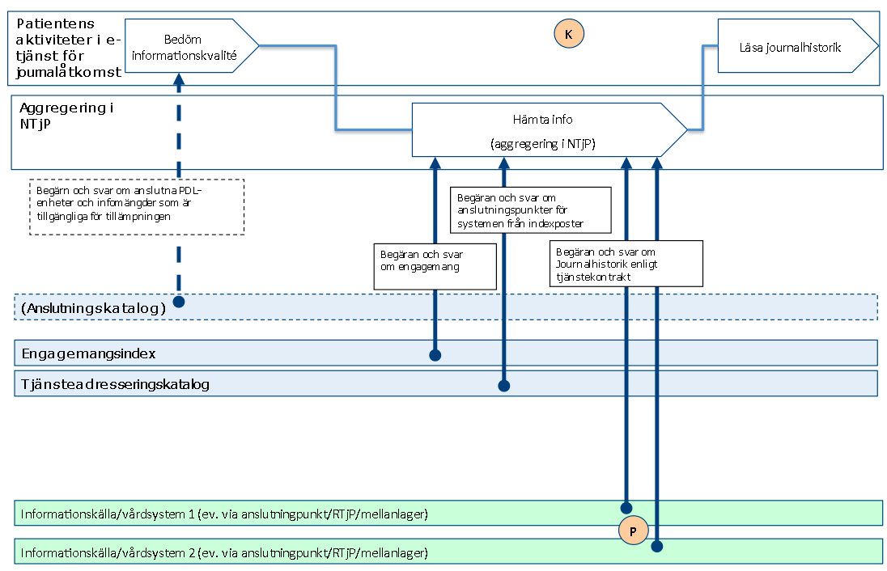

This fragment is not visible to the reader
| Type | Reference | Content |
|---|---|---|
| web | www.inera.se |
IG © 2024+
. Package inera.clinicalprocess-activityprescription-actoutcome#1.0.2 based on FHIR 4.0.1
. Generated 2026-10-08
Links: Table of Contents | QA Report |
| web | oskthu2.github.io |
TKB-version:
1.0.2 · IG-version:
1.0.2 · Källa:
Bitbucket-tagg 1.0.2
· Andra huvudversioner:
2.2.1
|
| web | oskthu2.github.io | Äldre huvudversion. Detta är TKB 1.0 (Bitbucket-taggen 1.0.2). Den senaste huvudversionen, 2.2, finns på clinicalprocess: activityprescription: actoutcome . |
|
img_001.png
|
|
img_002.png  |
|
img_003.png
|
|
img_004.png  |
|
img_005.png
|
|
img_006.svg  |
|
img_007.png
|
|
img_008.png
|
|
img_009.png
|
|
tree-filter.png
|